在我们了解到，RAID可以实现磁盘的高性能读写，并实现冗余，而LVM逻辑卷则可以实现磁盘的弹性扩展，那么如何将两者配合使用并将它们的优势充分发挥呢，今天我们来实验在软件RAID上搭建LVM逻辑卷
实验预期：
在CentOS6.9系统上搭建两个RAID级别，分别为RAID0,及RAID5，将两个RAID合并为卷组并创建逻辑卷，实现冗余、性能提升、及弹性拓展。
实验准备环境：
CentOS6.9服务器一台，3块硬盘，分别为40G,60G,80G，并在每块磁盘创建分区sdx1容量为1G，sdx2容
量为2G，创建挂载用空目录/test。
##
实验一：在软件RAID创建LVM逻辑卷
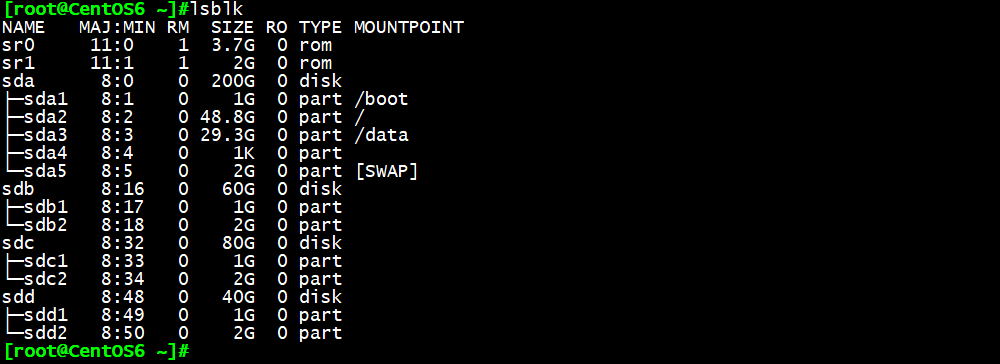
1.mdadm -C /dev/md1 -a yes -l5 -n3 /dev/sd{b1,c1,d1}
将三个容量为1G的分区sdb1，sdc1，sdd1组成一个名称为md1的RAID5
2.mdadm -C /dev/md2 -a yes -l0 -n3 /dev/sd{b2,c2,d2}
将三个容量为2G的分区sdb2，sdc2，sdd2组成一个名称为md2的条形卷RAID0
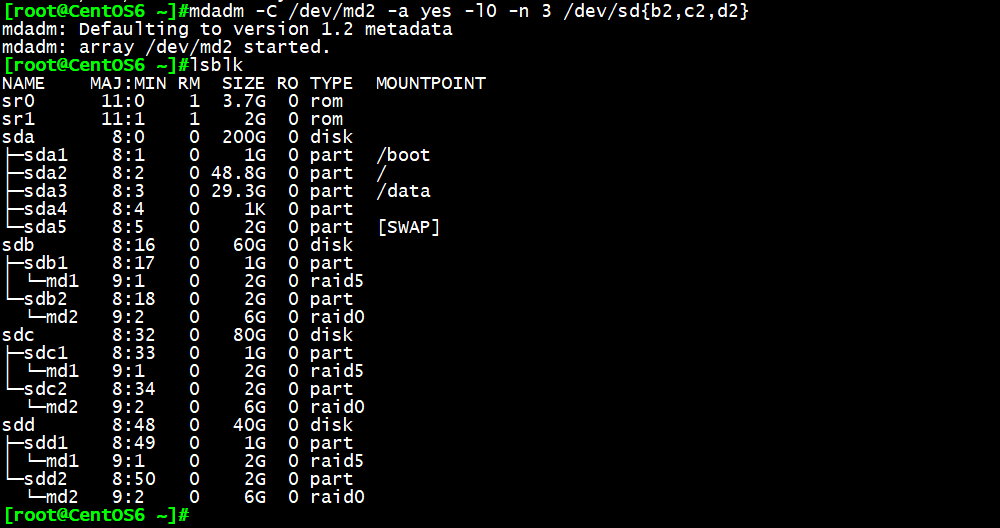
3.mdadm -D /dev/md1
mdadm -D /dev/md2
查看RAID5、RAID0，确定已创建成功，md1设备可用容量为2G，md2设备可用容量为6G
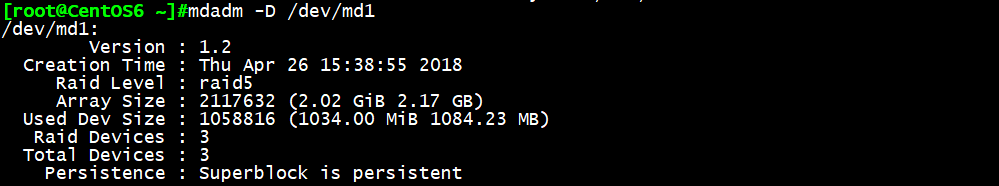
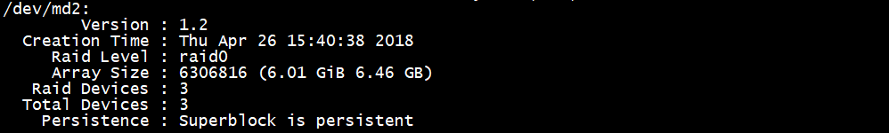
4.pvcreate /dev/md1 /dev/md2
将md1、md2设备创建为物理卷
5.vgcreate vg_md /dev/md1 /dev/md2
创建由md1、md2组成的卷组vg_md，可用容量为8G
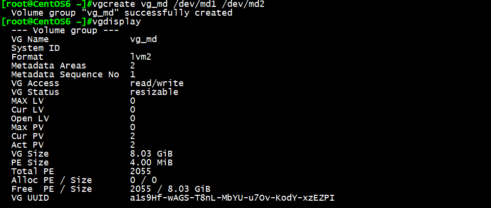
6.lvcreate -L 7G -n lv_md vg_md
在卷组vg_md上创建一个名称为lv_md，大小为7G的逻辑卷
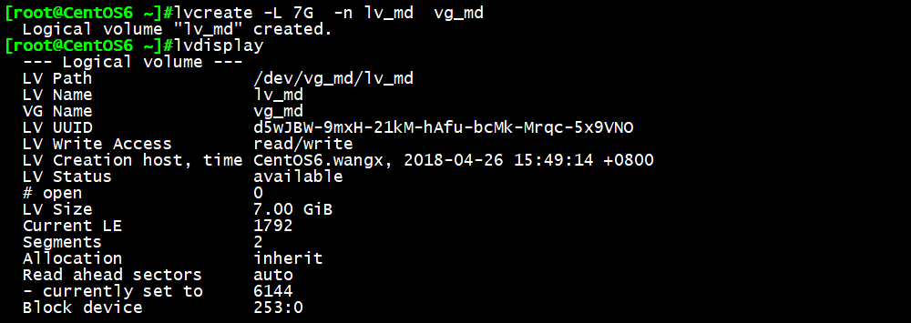
7.mke2fs -t ext4 /dev/vg_md/lv_md
创建逻辑卷lv_md的文件系统为ext4
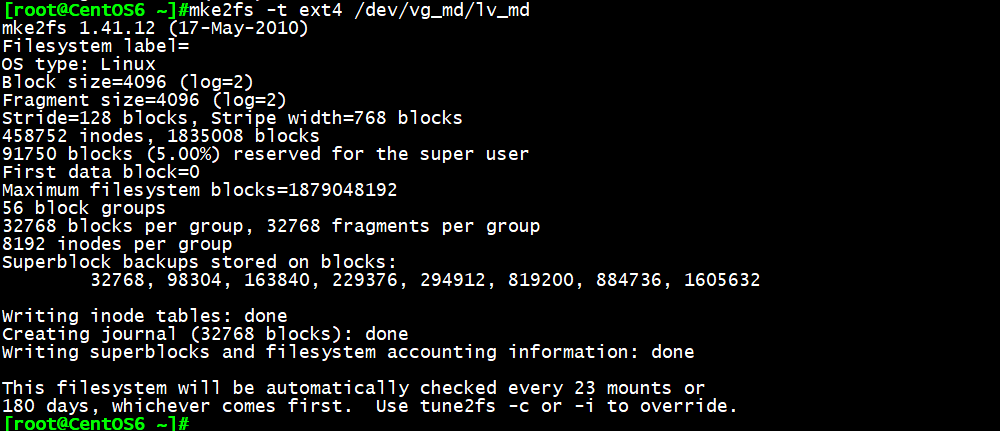
8.mount /dev/vg_md/lv_md /test/
将逻辑卷lv_md挂载至提前准备好的空目录/test，这时我们看到逻辑卷lv_md已搭建在RAID0与RAID5共
同组成的分区上
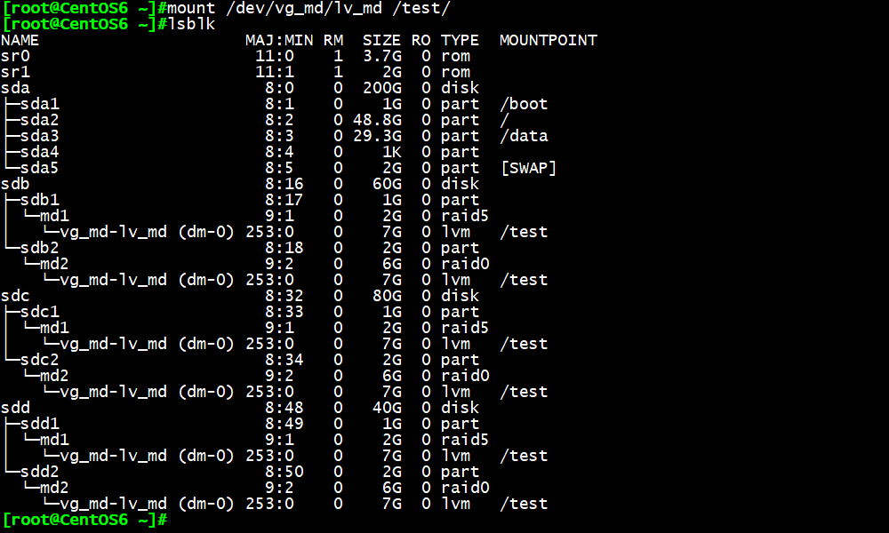
9.vim /etc/fstab
将挂载信息写入/etc/fstab文件，实现开机自动挂载
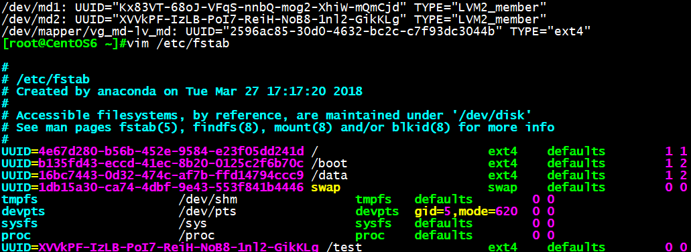
10.dd if=/dev/zero of=/test/1G.file bs=1024k count=1000
dd if=/dev/zero of=/data/1G.file bs=1024k count=1000
测试磁盘写速度，可见/test目录下写性能相比普通磁盘挂载的/data目录确实有显著提升
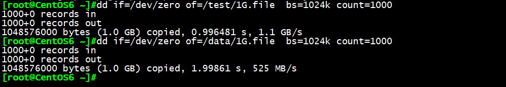
实验二：扩展逻辑卷到15G
由于原有卷组总容量只有8G，我们选择新创建一个10G分区sda6并添加至原卷组中
1.pvcreate /dev/sda6 创建卷组
2.vgextend vg_md /dev/sda6 将10G分区sda6添加至vg_md卷组
3.lvextend -r -L 15G /dev/vg_md/lv_md 拓展逻辑卷lv_md到15G
注：命令3中-r选项代表同步文件系统大小与逻辑卷大小相同，也可用resize2fs /dev/sda6命令代替
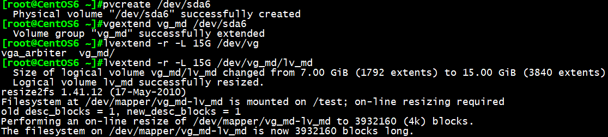
实验三：缩减逻辑卷到5G
注意：只有ext4系列文件系统可进行LVM缩容，xfs文件系统无法缩减，缩容前先保证缩容后分区容量大于
数据容量，否则数据将被破坏，生产环境中一般不进行缩容LVM操作。
1.umount /test/ 卸载
resize2fs /dev/vg_md/lv_md 5G 缩减文件系统到5G
提示应先使用命令e2fsck -f检查文件系统
注意文件系统与逻辑卷的执行顺序，扩容时为先扩容逻辑卷再扩容文件系统，缩容时为先缩容文件
系统再**缩容逻辑卷，否则，执行e2fsck -f检查文件系统将失败**
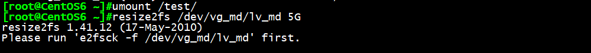
2.e2fsck -f /dev/vg_md/lv_md 检查文件系统
3. resize2fs /dev/vg_md/lv_md 5G 缩减文件系统到5G
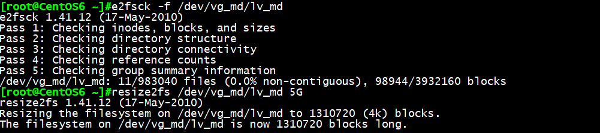
4.lvreduce -L 5G /dev/vg_md/lv_md 缩减逻辑卷到5G
5.lvdisplay 显示逻辑卷已缩减成功
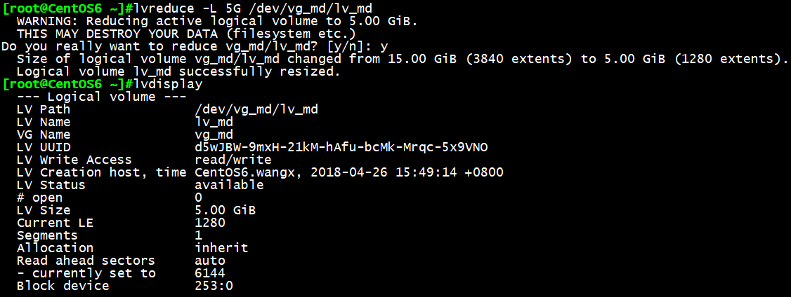
总结：可见实验RAID和LVM配合使用，确实提升了磁盘的读写性能，实现了冗余，并且可弹性管理分区大小